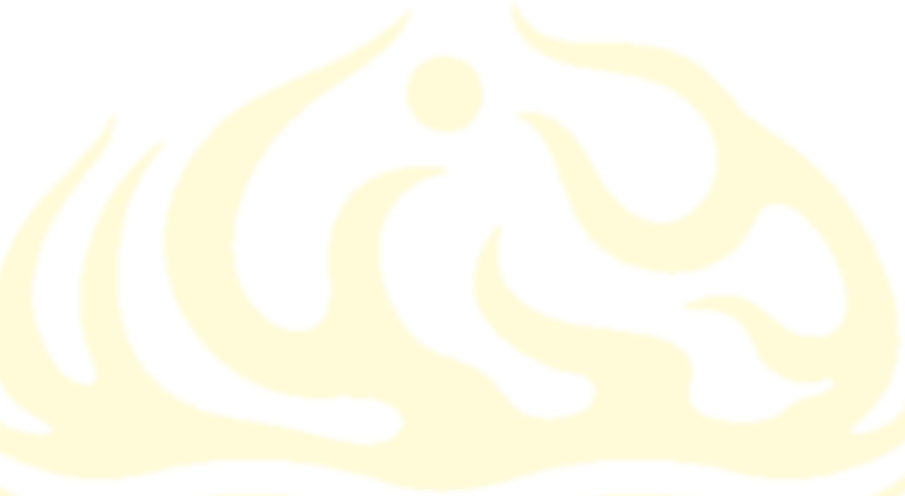
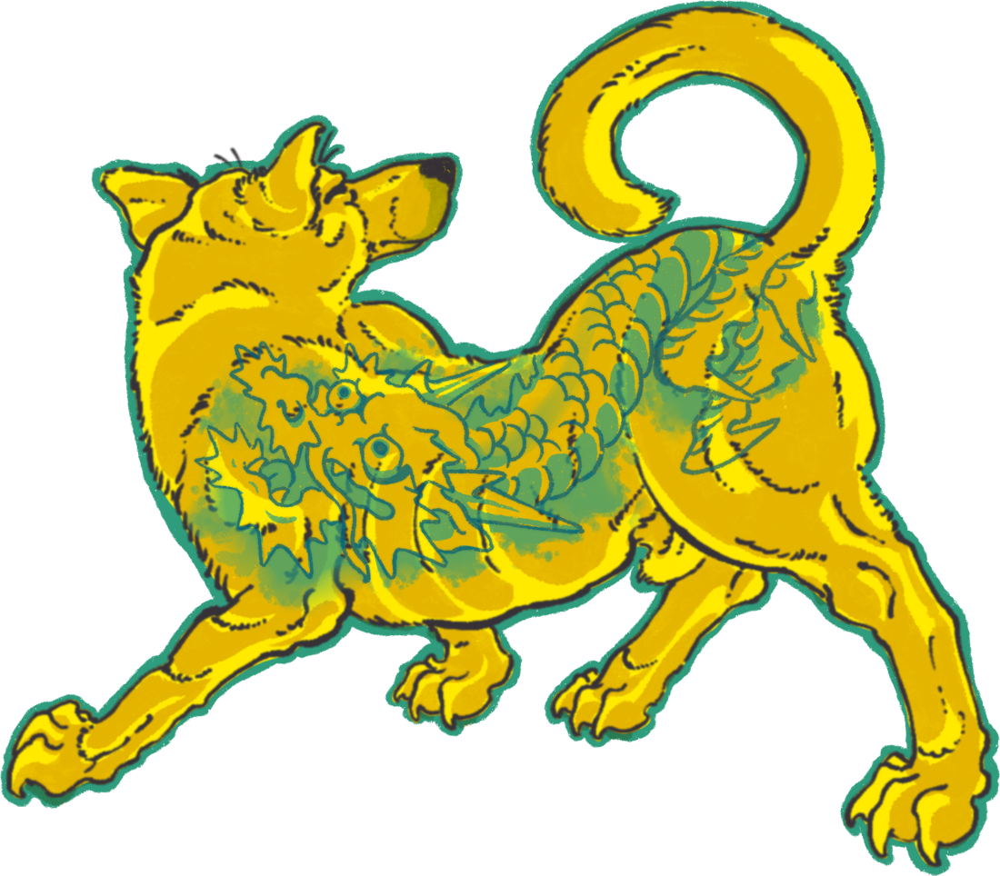

Oficina com Leandro Cotta
com Leandro Cotta · @leandrocottta
[tema da oficina e o que a galera vai aprender]
- quando
- [horário]
- vagas
- [nº de vagas e como se inscrever]


A Feira Rastro é uma feira de arte independente feita por quem desenha, grava, pinta, modela e tatua. Tem tatuadores, ilustradores, gravuristas, ceramistas, artesãs e DJ, vindos de Viçosa, Belo Horizonte, Juiz de Fora, Sete Lagoas, Ervália, Manhuaçu e Vitória.
Durante a tarde e a noite, a Casa Flamma vira ponto de encontro: mesas com prints, gravuras, zines, cerâmica, crochê e adesivos, um flash day com flashes exclusivos, oficinas com os próprios artistas, pintura ao vivo, feira de discos e música.
É a primeira feira que a gente organiza. A ideia é simples: aproximar quem faz de quem curte, comprar direto da mão do artista e fortalecer a cena da região. A entrada é gratuita. Traz geral.
23 tatuadores com flashes exclusivos, desenhados só pra esse dia. Todos os flashes ficam expostos numa área só. Você entra, escolhe o seu, paga e já sai com o horário marcado.
Por ordem de chegada, a partir das 15h. Quem chega primeiro escolhe primeiro.
Os flashes são exclusivos da feira. Escolheu, é seu: cada desenho é tatuado uma vez só.
Faz o pagamento ali mesmo e marca o horário com o tatuador, ou espera a sua vez no dia.
Quem vem de outra cidade tatua no dia da feira (07.11) ou no dia seguinte (08.11), conforme a agenda de cada um.
Prints, gravuras, cianotipias, zines, adesivos, bandeiras e camisas direto da mão de quem fez.
Atividades abertas durante a tarde, com os próprios artistas. Veja as oficinas.
Tela, parede e pele: artistas pintando enquanto a feira acontece.
Garimpo de vinil com o 1 Disquim, que também toca durante o evento.
Catálogo de joias e perfurações no dia com 20% de desconto.
Oficinas abertas durante a tarde, com os próprios artistas da feira. Horários e inscrições saem aqui e no @feirarastro.
[tema da oficina e o que a galera vai aprender]
[tema da oficina e o que a galera vai aprender]
[descrição curta da oficina]
Tatuadores, ilustradores, ceramistas, gravuristas e DJ. Toca na foto pra ver os trabalhos, ou no @ pra ir direto pro Instagram.
Casa FlammaR. Padre Anchieta, 210
Ramos · Viçosa/MG
É a primeira feira que a Casa Flamma organiza: o estúdio do Diego Shogun abre as portas pra reunir os amigos e a galera que curte o nosso trampo.